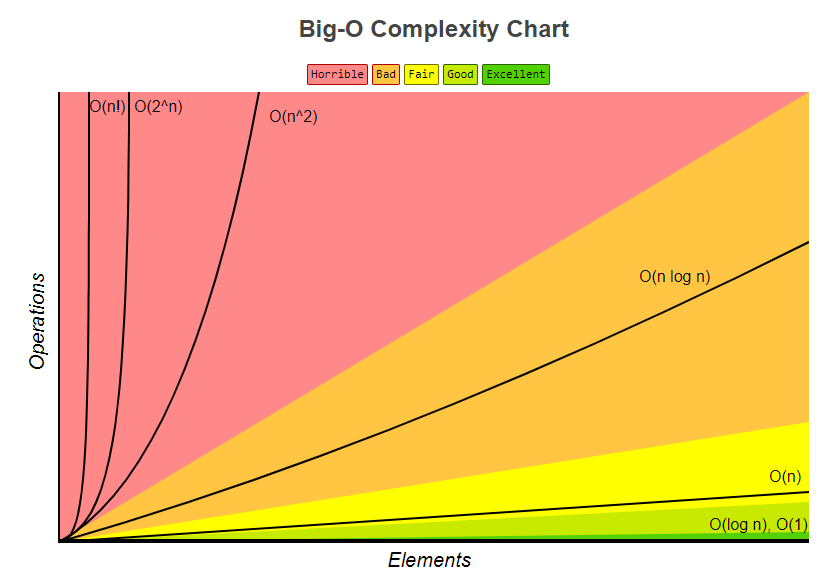

O-Notation

https://www.bigocheatsheet.com
Definition
| Notation | Definition | Mathematische Definition |
|---|---|---|
| \(f \in \mathcal{O}(g)\) | asymptotische obere Schranke | \[ \limsup_{x \to a} \left|\frac{f(x)}{g(x)}\right| < \infty \] |
| \(f \in \Omega(g)\) | asymptotische untere Schranke \(g \in \mathcal{O}(g)\) | \[ \liminf_{x \to a} \left|\frac{f(x)}{g(x)}\right| >0 \] |
| \(f \in \Theta(g)\) | asymptotisch schrafe Schranke, sowohl \(f\in\mathcal{O}(g)\) als auch \(f\in\Omega(g)\) | \[ 0 < \liminf_{x \to a} \left|\frac{f(x)}{g(x)}\right| \le \limsup_{x \to a} \left|\frac{f(x)}{g(x)}\right|< \infty \] |
| \(f \in \hbox{o}(g)\) | asymptotisch gegenüber \(g\) vernachlässigbar | \[ \lim_{x \to a} \left|\frac{f(x)}{g(x)}\right | = 0 \] |
| \(f \in \omega(g)\) | asymptotisch dominant, \(g\in\hbox{o}(f)\) | \[ \lim_{x \to a} \left|\frac{f(x)}{g(x)}\right| = \infty \] |
Mengen Definition
| Notation | Menge |
|---|---|
| \[ \mathcal{O}(f(n)) \] | \[ \{ g(n) : \exists c > 0 : \exists n_0 \in \mathbb{N}_+ : \forall n \geq n_0 : g(n) \leq c * f(n) \} \] |
| \[ \Omega(f(n)) \] | \[ \{ g(n) : \exists c > 0 : \exists n_0 \in \mathbb{N}_+ : \forall n \geq n_0 : g(n) \geq c * f(n) \} \] |
| \[ \Theta(f(n)) \] | \[ \mathcal{O}(f(n)) \cap \Omega(f(n)) \] |
| \[ \hbox{o}(f(n)) \] | \[ \{ g(n) : \forall c > 0 : \exists n_0 \in \mathbb{N}_+ : \forall n \geq n_0 : g(n) \leq c * f(n) \} \] |
| \[ \omega(f(n)) \] | \[ \{ g(n) : \forall c > 0 : \exists n_0 \in \mathbb{N}_+ : \forall n \geq n_0 : g(n) \geq c * f(n) \} \] |
Gebräuchliche Klassen
| O-Klasse | Eigenschaft |
|---|---|
| \( \mathcal{O}(1) \) | Höchstens konstanter Aufwand |
| \( \mathcal{O}(\log n) \) | Höchstens logarithmischer Aufwand |
| \( \mathcal{O}(n) \) | Höchstens linearer Aufwand |
| \( \mathcal{O}(n \log n) \) | Höchstens \( n \log n \) |
| \( \mathcal{O}(n^2) \) | Höchstens quadratischer Aufwand |
| \( \mathcal{O}(n^k) \) | Höchstens polynomialer Aufwand |
| \( \mathcal{O}(2^n) \) | Höchstens exponentieller Aufwand |
Hierarchie im O-Kalkül
Für \(a \in \mathbb{N}_+\) mit \( a > 1\) gilt:
\[ 1 \leq \log{n} \leq \sqrt[a]{n} = n^{\frac{1}{a}} \leq n \leq n^a \leq a^n \leq n! \leq n^n \]
Rechenregeln
Sei \(p(n) = \sum_{i=0}^{k} a_i n^i\) ein Polynom mit reelen Koeffizienten, wobei \(a_k > 0\) gilt.
Dann ist \( p(n) \in O(n^k) \)
Falls \( g(n) \in O(f(n)) \) gilt:
\[ f(n) + g(n) \in O(f(n)) \]
\[ \forall c > 0 : c f(n) \in \Theta(f(n)) \]
\[ f(n) + g(n) \in \Omega(f(n)) \]
\[ O(f(n)) * O(g(n)) = O(f(n) * g(n)) \]